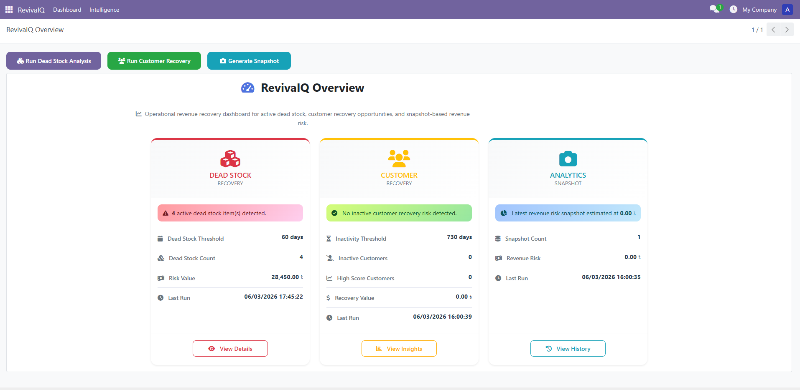
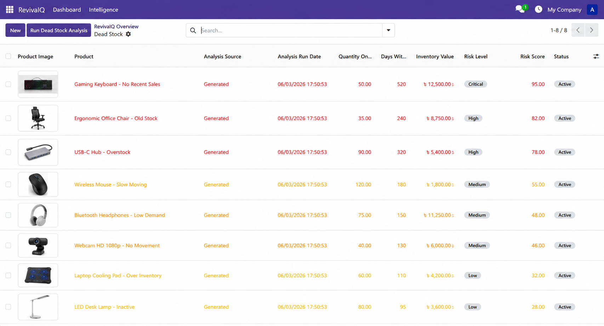
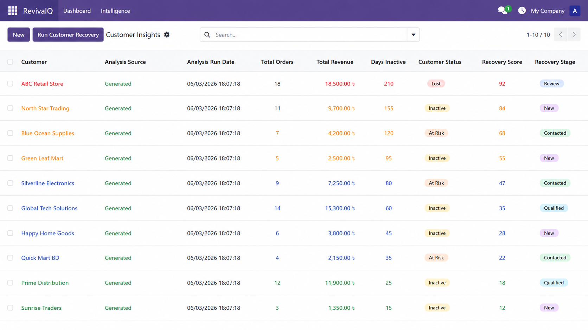
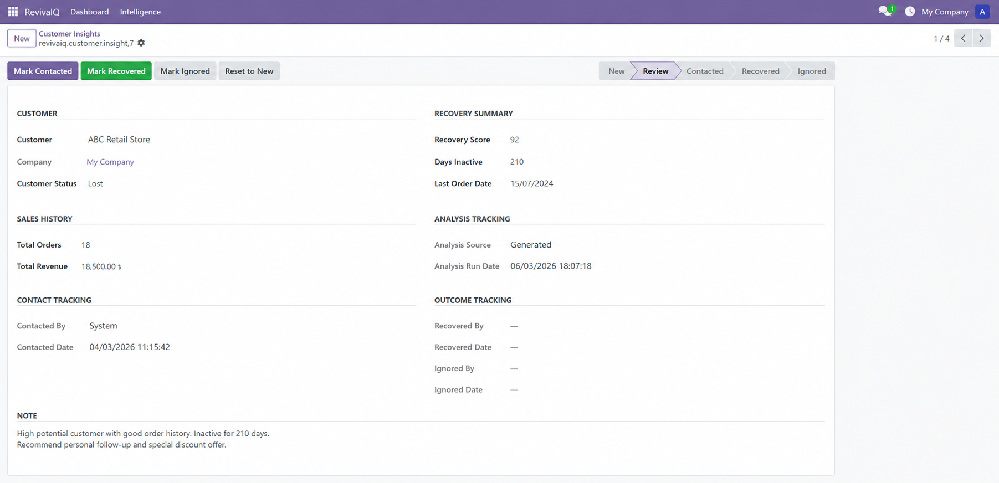
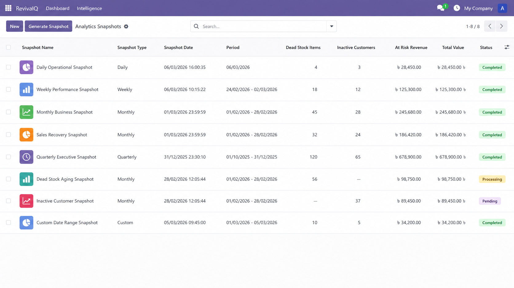
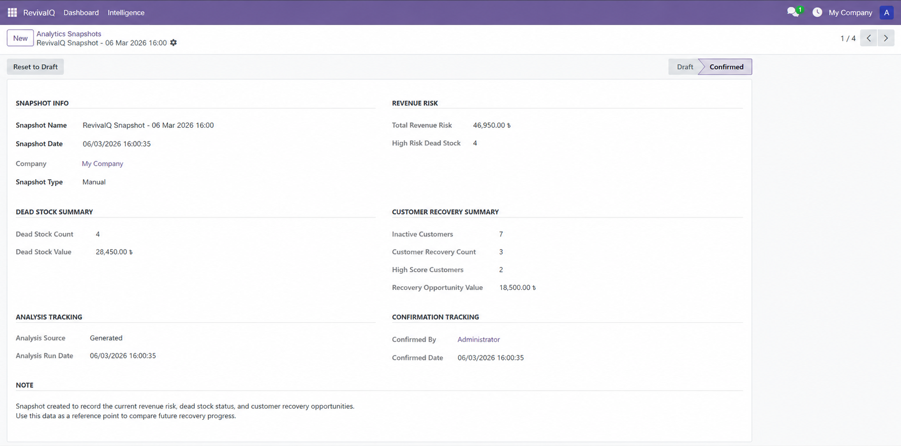
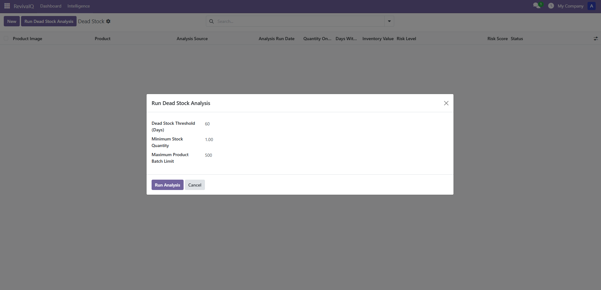
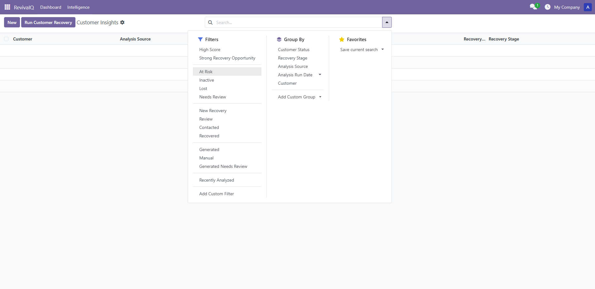

RevivaIQ Base is an Odoo operational intelligence module designed for dead stock management, slow moving inventory tracking, inactive customer recovery, sales recovery analytics, and executive revenue risk monitoring.
It helps sales, inventory, warehouse, and operations teams identify hidden revenue loss, reduce slow-moving stock, recover inactive customers, and track business risk through a clean Odoo-native dashboard.
Detect slow moving inventory, non-moving products, and stock items that have not sold for a long time. Review inventory risk value, risk score, and operational status before taking action.
Identify inactive customers, lost customers, and customer retention opportunities. Review recovery scores, sales history, and recovery workflow stages inside Odoo.
Save point-in-time revenue risk summaries so managers can compare dead stock risk, inactive customer value, and recovery progress over time.
View dead stock risk, inactive customer recovery opportunities, and latest analytics snapshot summaries from one clean Odoo dashboard.

Identify slow-moving stock, non-moving inventory, and old products that may be locking business capital. Review risk details and operational tracking before taking action.


Track inactive customers, recovery scores, customer status, and recovery workflow stages. RevivaIQ helps sales teams find customers worth contacting again.


Save revenue risk summaries and compare recovery progress over time. Snapshots help managers understand whether dead stock and customer recovery actions are improving business performance.


Run dead stock analysis with configurable thresholds and batch limits.

Use search filters and grouping to review recovery opportunities faster.

Many businesses lose money because dead stock stays unnoticed, slow moving inventory locks working capital, and inactive customers are not followed up. RevivaIQ Base turns these hidden risks into clear, actionable Odoo records.
It is designed as a practical foundation for sales recovery, inventory intelligence, customer retention, warehouse analytics, and executive business reporting without adding unnecessary complexity.
For support, customization, or installation help, contact: support@codenrs.com
Website: https://codenrs.com/revivaiq